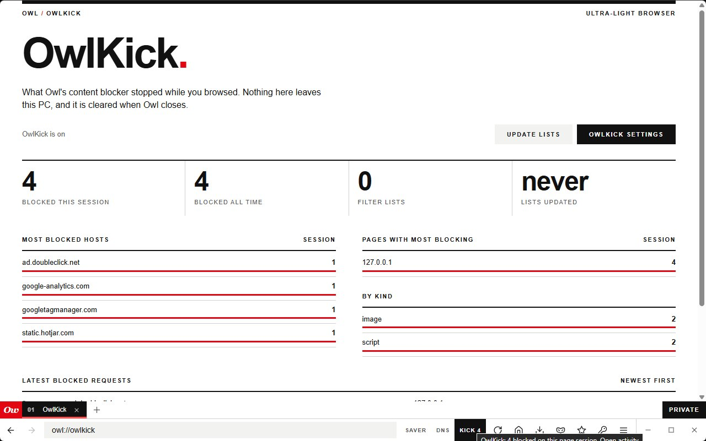
OwlKick blocks trackers
Built on adblock-rust, the engine Brave uses. One click on the toolbar shows every request it stopped.
EasyList and EasyPrivacy, refreshed weeklyOwl is a small Windows browser that blocks trackers with its own engine, seals your data when it locks and downloads over eight connections. Free and open source.
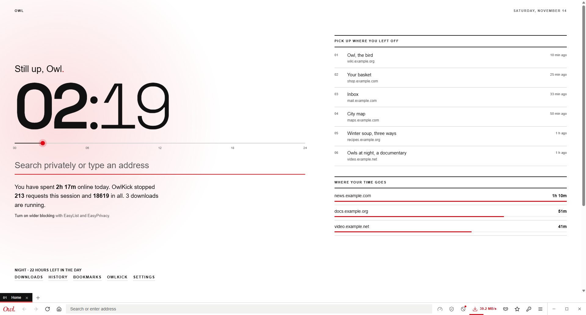
No extensions to find, no account, no cloud in the middle. These are real Owl screens. Scroll sideways.

Built on adblock-rust, the engine Brave uses. One click on the toolbar shows every request it stopped.
EasyList and EasyPrivacy, refreshed weekly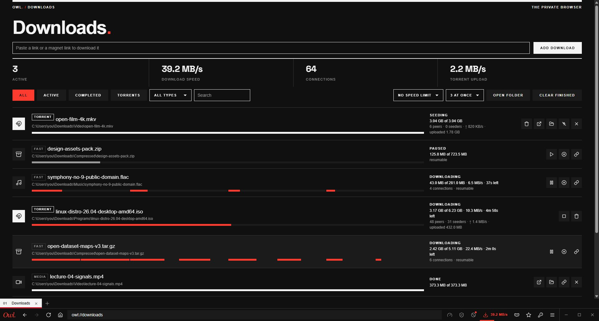
Big files split into parts, torrents in the same list. Pause, resume after a restart, queue them and cap the speed.
Up to 8 connections per file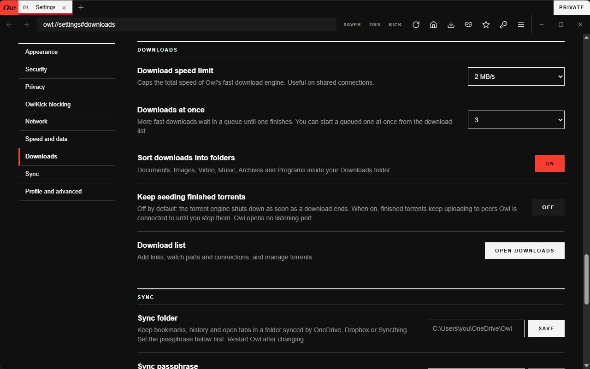
Keep tabs and the address bar at the bottom, or move them to the top with one switch.
Eight Swiss themes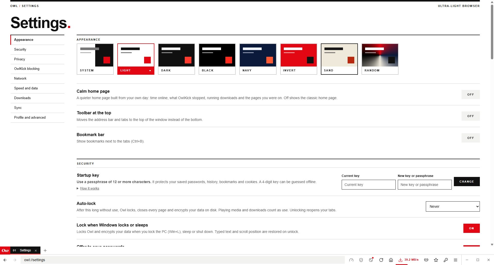
Nine plain groups with a sidebar. Data saver, secure DNS and OwlKick also sit on the toolbar.
One click to switch them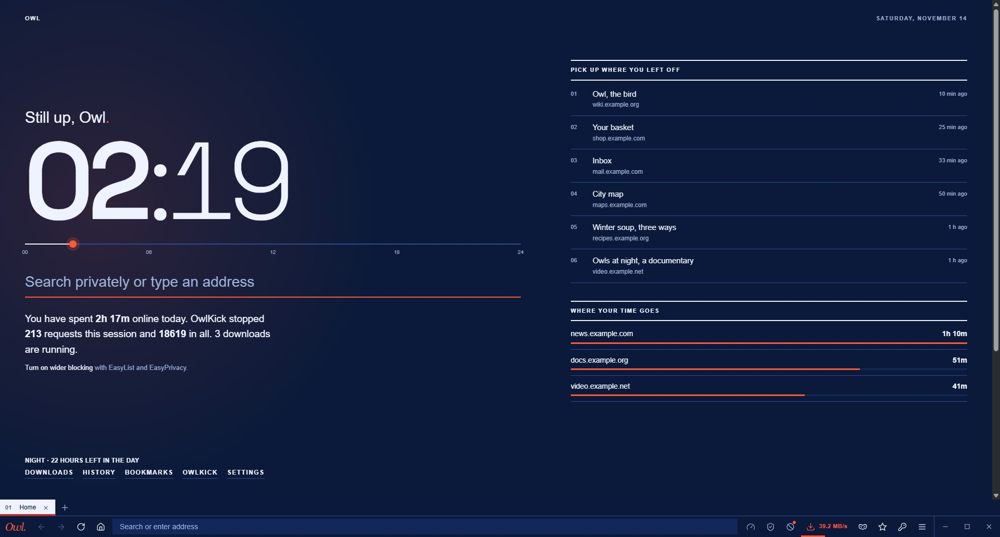
A classic one with quick access, or a calm one built from your own day: time online, what was blocked, where you were.
Space Grotesk clock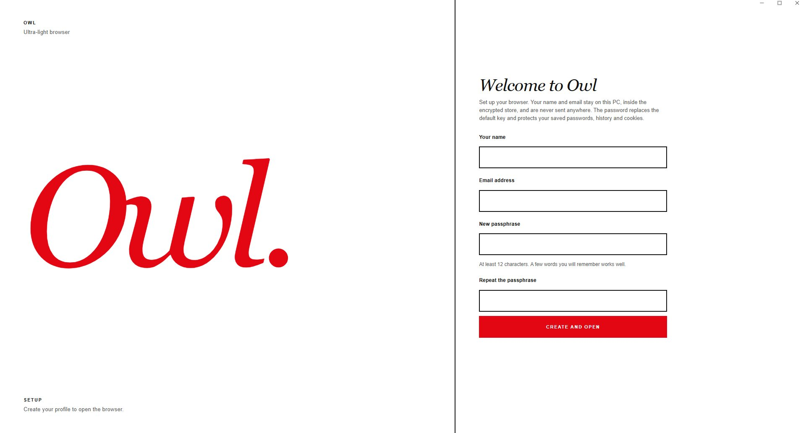
Chosen at first run. It protects passwords, history, bookmarks and cookies, and nothing can reset it for you.
Argon2id, 64 MiB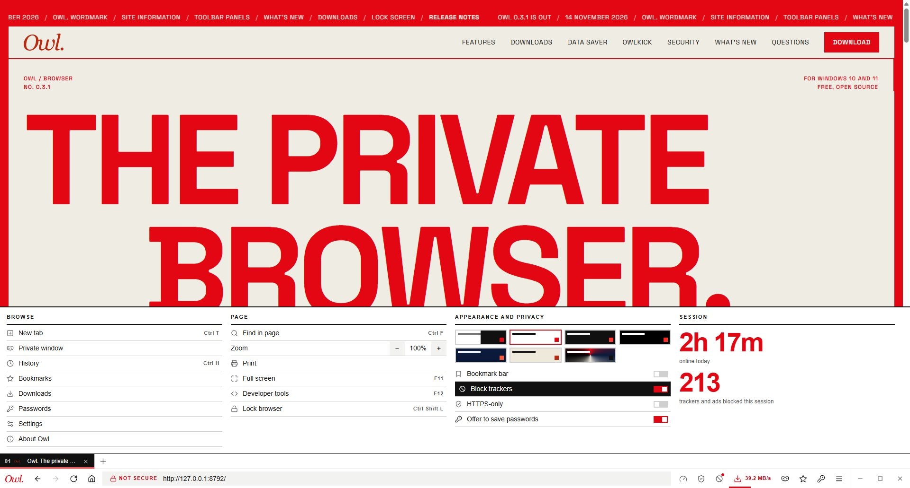
Everything else lives here, each item with an icon and a hint. Switches flip in place; the session column shows your time online and what was blocked.
Hover any switch to see what it doesThe classic home page gives you a big clock, search and your sites under the keys 1 to 8. The calm one is built from your own day: how long you were online, what OwlKick stopped, which downloads are running and the pages you left. Each theme recolours the whole browser, its own pages included.
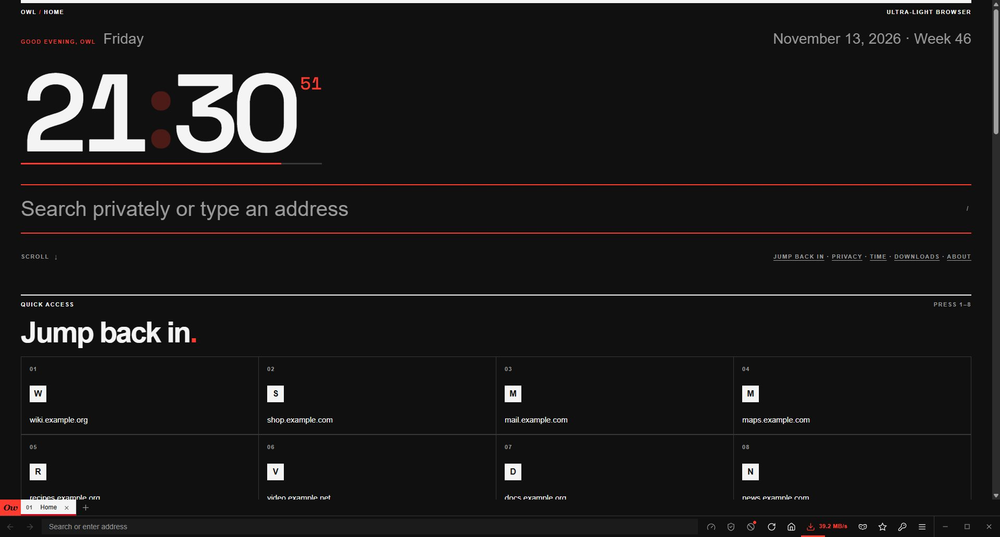
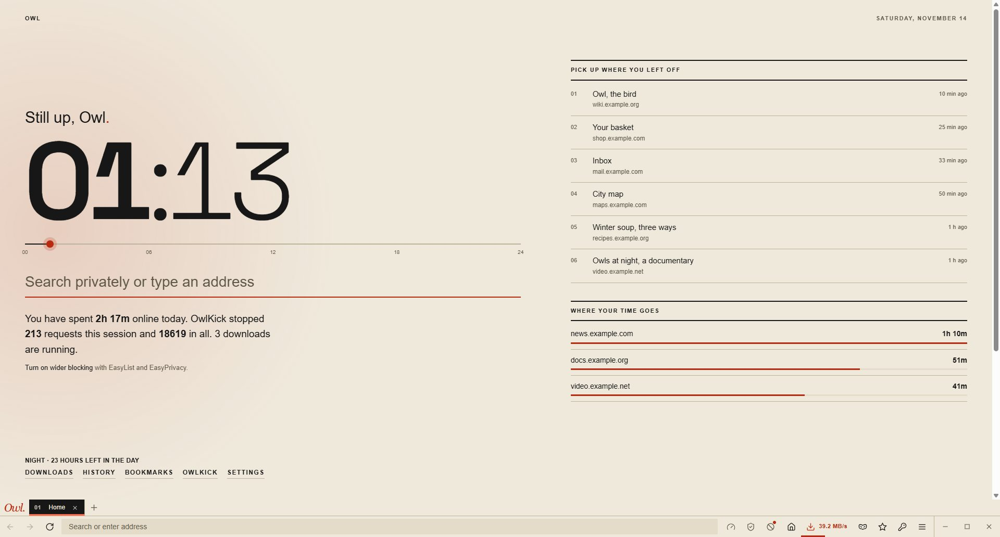
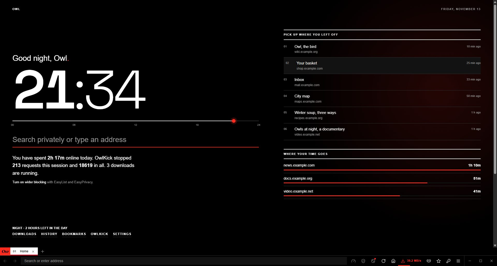
System, Light, Dark, Black, Navy, Invert, Sand and Random. System follows Windows. Random picks a new one each time Owl starts. The clock is set in Space Grotesk, the same face as this page.
Settings > Appearance
Owl takes downloads over from the page engine. Plain links go to a segmented engine, magnet links and .torrent files to a built-in BitTorrent client. Both report to the same list.
Pause, resume, queue, a speed cap for all downloads, a limit on how many run at once.
Peers found through DHT, peers and seeders shown live, stop and delete in one click. Refused in private windows.
On photo-heavy pages, Ultra Data saver loaded the page in a third of the time. It asks sites for lighter pages, loads off-screen images later and downloads only the first part of large progressive photos. We measured it rather than guessing.
Owl on a test page with six 2.4 to 3.0 MB photos over an 8 Mbit/s connection, a fresh profile for every run, repeated twice. Pages with small images gain little, and photos look slightly softer at higher levels.
One slider from 1 to 99 sets how hard it works, with Light, Balanced and Ultra as presets. The image steps pause while a proxy or secure DNS is on.
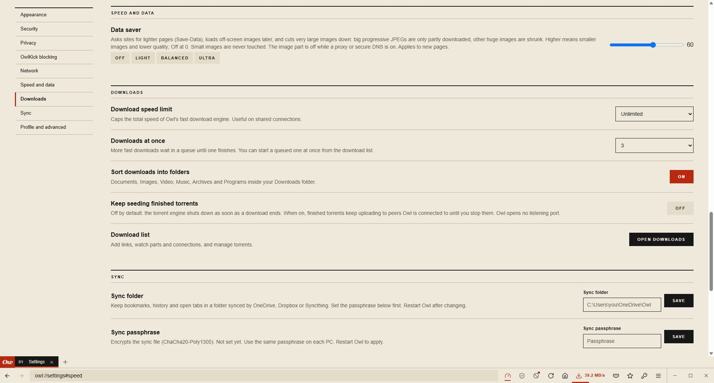
OwlKick is Owl's content blocker, built on adblock-rust, the open-source engine inside Brave. It checks every request a page makes before it leaves your PC.
Before a page opens, its name has to be turned into an address. Normally that question goes out in plain text, and your network or provider can read every site you visit.
That you connect to Cloudflare, and the address of each site.
The names you look up, in readable text.
Want a real VPN? If Cloudflare WARP is installed, Owl can connect, disconnect and check it from Settings.
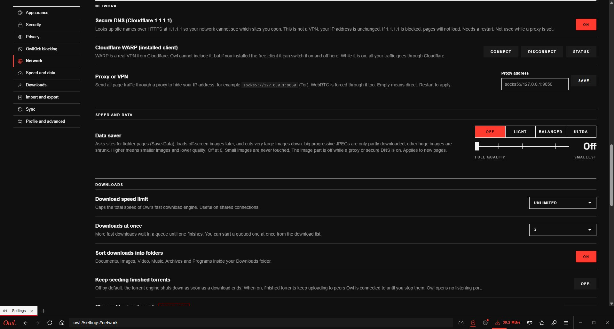
OwlKick, Data saver and Secure DNS each open a small panel from the toolbar, like an extension popup, with the numbers that matter and a switch.
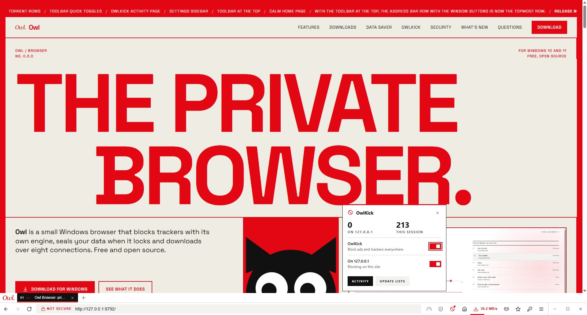
While Owl is open and unlocked it works like any browser. Cookies and logins sit in its profile folder.
Released 14 November 2026. Also 3 fixed, 3 changed. 2 known issues are listed in the notes.
Full release notesThe browser is called Owl. (with the dot). A new wordmark, traced from the brand artwork, replaces the owl-face logo in the app icon, installer, tab strip, lock screen, landing page, favicon and README.
Click the lock in the address bar to see whether the connection is secure, the certificate, cookies for the site and the permissions you gave it, with Clear site data and Reset.
OwlKick, Data saver and Secure DNS open a small floating panel with the key numbers and switches, including turning OwlKick off for one site.
Shown once after an install or update, with screenshots.
Select a download to see its own progress, speed, connections or peers in the totals bar; row actions are icons with tooltips.
The wordmark writes itself; Owl's pages and new web pages glide in; a loading line runs in the address bar while a page loads.
No. Pages render with Microsoft Edge WebView2, the engine already on Windows, so sites work as in Edge and engine security fixes arrive with Windows updates. Owl is the browser around it, written in Rust.
No account, no telemetry, no analytics. Two things reach the internet only when you ask: the optional daily update check and the EasyList download for OwlKick.
There is no reset, because your data is encrypted with it. You can start over by deleting the Owl folder, which erases history, bookmarks and saved passwords.
Not by a professional firm. It is a small open-source project with an automated test suite, and the security notes say plainly what it does and does not protect against.
Every release carries a build attestation from GitHub Actions and SHA-256 checksums. Check the installer with gh attestation verify Owl-Setup.exe --repo fardinahosancse/owl-browser.
Not yet. Owl runs on Windows 10 and 11. A macOS port is planned and tracked on GitHub.
Install needs no administrator rights and keeps everything in one folder on your PC. If you do not like it, the uninstaller removes it all.
Download Owl